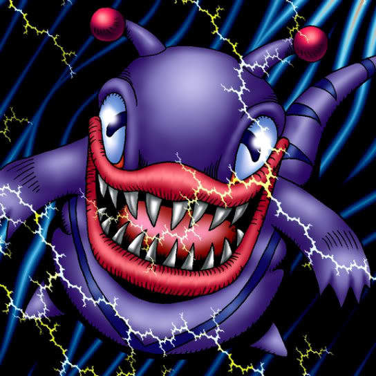

Electric Lizard

Description: "Spellbinds the opposing enemy for 1 turn when this card is flipped face-up in battle."
STATS
ATK: 850
DEF: 800DECK COST
Deck Cost per Card: 22EFFECT NOT IMPLEMENTED
Fusion List (34 Possible Fusions)
- Electric Lizard + B. Dragon Jungle King = Twin-Headed Thunder Dragon
- Electric Lizard + Boo Koo = The Immortal of Thunder
- Electric Lizard + Change Slime = Bolt Escargot
- Electric Lizard + Crawling Dragon #2 = Twin-Headed Thunder Dragon
- Electric Lizard + Crawling Dragon = Twin-Headed Thunder Dragon
- Electric Lizard + Curse of Dragon = Twin-Headed Thunder Dragon
- Electric Lizard + Dragon Zombie = Twin-Headed Thunder Dragon
- Electric Lizard + Dryad = The Immortal of Thunder
- Electric Lizard + Eldeen = The Immortal of Thunder
- Electric Lizard + Fiend Kraken = Bolt Escargot
- Electric Lizard + Flame Manipulator = The Immortal of Thunder
- Electric Lizard + Gaia the Dragon Champion = Twin-Headed Thunder Dragon
- Electric Lizard + Kairyu-Shin = Twin-Headed Thunder Dragon
- Electric Lizard + Kaiser Dragon = Twin-Headed Thunder Dragon
- Electric Lizard + Kanikabuto = Bolt Escargot
- Electric Lizard + Metal Dragon = Twin-Headed Thunder Dragon
- Electric Lizard + Meteor Dragon = Twin-Headed Thunder Dragon
- Electric Lizard + Parrot Dragon = Twin-Headed Thunder Dragon
- Electric Lizard + Petit Dragon = Thunder Dragon
- Electric Lizard + Psychic Kappa = Bolt Escargot
- Electric Lizard + Red-Eyes B. Dragon = Twin-Headed Thunder Dragon
- Electric Lizard + Sea King Dragon = Twin-Headed Thunder Dragon
- Electric Lizard + Sectarian of Secrets = The Immortal of Thunder
- Electric Lizard + Seiyaryu = Twin-Headed Thunder Dragon
- Electric Lizard + Skelgon = Twin-Headed Thunder Dragon
- Electric Lizard + Spike Seadra = Twin-Headed Thunder Dragon
- Electric Lizard + Star Boy = Bolt Escargot
- Electric Lizard + Stone D. = Twin-Headed Thunder Dragon
- Electric Lizard + Sword Arm of Dragon = Twin-Headed Thunder Dragon
- Electric Lizard + Thunder Dragon = Twin-Headed Thunder Dragon
- Electric Lizard + Time Wizard = The Immortal of Thunder
- Electric Lizard + Turu-Purun = Bolt Escargot
- Electric Lizard + Twin Long Rods #1 = Bolt Escargot
- Electric Lizard + Wicked Dragon with the Ersatz Head = Thunder Dragon